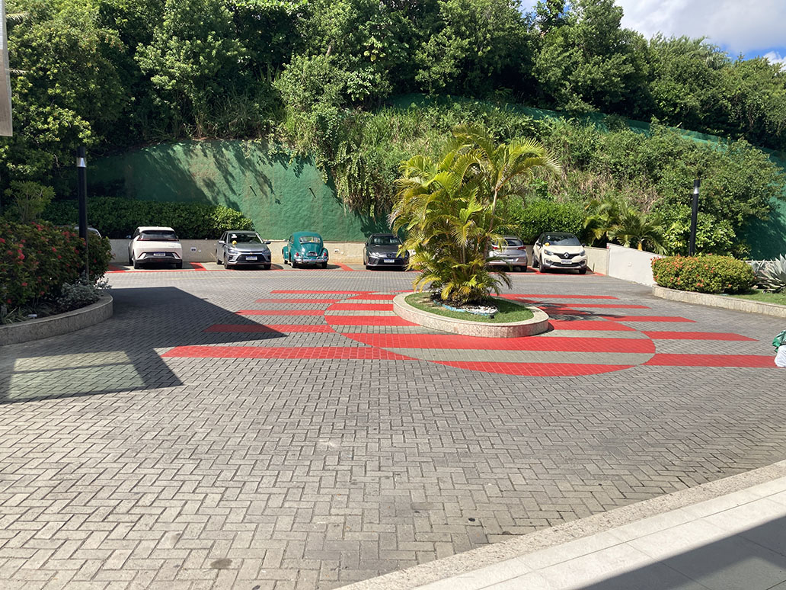

Rotatória principal
Estudo visual para reduzir o excesso de sinalização e qualificar a chegada oficial do Costa España.

Sinalização vermelha com forte impacto visual sobre o piso existente.
Clique aqui para ver a imagem maior

Estudo de redução do ruído visual, preservando a lógica do espaço e valorizando a chegada.
Clique aqui para ver a imagem maior
Rotatória principal: menos sinalização, mais sofisticação
A rotatória principal do Costa España é um dos pontos mais importantes de percepção do condomínio. Ela funciona como área de chegada, desaceleração, desembarque de moradores e distribuição de fluxo entre portaria e garagem. Em outras palavras: é um espaço que comunica imediatamente a sensação de cuidado — ou de improviso.
O principal problema da composição atual não está necessariamente no piso ou na geometria da rotatória, mas no excesso e na agressividade visual da sinalização. O vermelho intenso aplicado no chão cria uma leitura muito mais próxima de estacionamento operacional, centro logístico ou área industrial do que de um condomínio residencial de alto padrão frente-mar.
A proposta de revitalização parte justamente do princípio oposto: reduzir o ruído visual.
Em empreendimentos sofisticados, a sinalização normalmente não tenta dominar o espaço. Ela atua de forma mais silenciosa, elegante e integrada à arquitetura. Isso significa menos tinta, menos informação espalhada e mais valorização da materialidade já existente.
Um ponto importante é que a proposta não depende de reconstruir toda a área. Pelo contrário: a ideia é preservar o piso existente e trabalhar principalmente com refinamento visual, tonalidades mais elegantes e uma composição mais coerente.
A nova leitura utiliza tons mais sóbrios, menos agressivos e muito mais compatíveis com a linguagem tropical e residencial do Costa España. O verde do muro, por exemplo, foi reinterpretado para uma tonalidade mais profunda e sofisticada, evitando aquele aspecto excessivamente claro e artificial.
Outro cuidado importante foi evitar excesso de marcações gráficas na rotatória. Em áreas residenciais desse tipo, o motorista naturalmente já reduz velocidade. Portanto, não existe necessidade de transformar a área em um espaço excessivamente “viário”. Luxo geralmente significa exatamente o contrário: menos interferência visual e mais naturalidade.
A ilha central também ganha mais protagonismo paisagístico. Em vez de competir com sinalizações agressivas no chão, ela passa a funcionar como elemento principal da composição, criando sensação mais agradável de chegada e permanência.
O resultado pretendido não é uma rotatória “futurista” ou cenográfica. O objetivo é criar uma área de acesso mais limpa, mais elegante, mais coerente e visualmente mais compatível com o padrão arquitetônico que o Costa España pode desenvolver ao longo dos próximos anos.